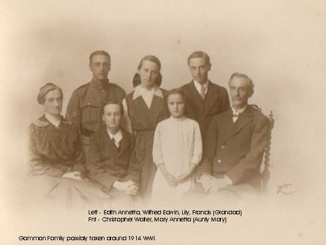

|
|
||||||||||||||
|
Family of: Edwin Alfred GAMMON and Edith Annetta JONES |
|||
|  | |||
|
Before they were married
|
|
Married life Edwin and Edith were married on the 4 February 18977 at the Oaklands Chapel, Uxbridge Road, Shepherds Bush, Fulham, London. When I visited this site in the early 2000s, the chapel was no longer there. At the time of their marriage, Edwin was working as a Grocers Manager, and they were living at 59 Wendell Road, Shepherds Bush, London, England. Their first child Wilfred Edwin GAMMON [31] was born on the 22 December 18978. At the time they were living at 45 Stroud Green Road, Islington, London and Edwin was still a grocers manager. Sometime between 1898 and 1899, the family moved to Reading, as Edwins grocers business can be found in the Kellys 1899 Berkshire Directory at North Side, 32 Hosier Street, Reading9. Their second child Francis GAMMON [6] was born on the 8 December 189910. Their address was given as Myrtle Grove, Argyle Street, Reading and this time Edwins occupation was given as Commercial Traveller. On the 22 January 190111, their third child and first daughter Lily GAMMON [32] was born. They were living at 15A Argyle Street, Reading and Edwin was still a Commercial Traveller. A few months later, at the time of the 1901 census of England and Wales (on the 31 March 1901), Edwin, Edith, Wilfred, Francis and Lily were still living at 15 Argyle Street, Reading12. Edwins occupation was unchanged. Edwin and Ediths fourth child Christopher Walter GAMMON [135] was born on 15 February 190313. The family are stated as living at 23 Tilehurst Road, Reading at this time, and Edwins occupation is still Commercial Traveller. Mary Annetta GAMMON [67] was born on 3 March 190814 and was the youngest child of Edwin and Edith. By 1908, the family were living at 17 Coley Hill, Reading. Edwins occupation was unchanged. So far, I have been unable to trace the movements of the family between 1908 and the 1950s. However, at some point the family moved to the Dorset or Hampshire area. It is known that Wilfred fought in the First World War in the Hampshire Regiment. Lily married Harry Moss who we know used to talk of his days in the army with either Wilfred or Francis. Francis emigrated to Australia between the two world wars. We know that Christopher Walter was mentally handicapped, and used to assist Francis with his work before Francis moved to Australia. On 24 September 1936, Christopher Walter Gammon died at the Portsmouth City Mental Hospital, 245 Laburnham Grove, North End, Portsmouth, Dorset15. He died of Pulmonary Tuberculosis which he had had for 18 months. The latter years In about 1953 Edwin, Edith and their youngest daughter Mary moved to 29A Queens Road, Parkstone, Dorset16 where Mary nursed them through their old age. On 18 June 195717, Edith passed away at their home in Parkstone. Her will (which was written on 23 July 1953) was proved in London on 9 July 195718. In her will she bequeaths £50 each to Wilfred, Francis and Lilly. The remainder of her estate was bequeathed to Mary. Edwin did not survive her for very long, as he died on 20 August 195719 at Lehnistonas Close, Wareham, Lady St Mary, Poole, Dorset. He died of Coronary Thrombosis and Ateriosclerosis (blood clot and hardening of the arteries). A check of subsequent years to find a will for Edwin was not successful. This may be because the family had already been provided for under the terms of Ediths will, and the house may have already been in Marys name. Sources: 1. Birth Certificate Ref: 1862 1st Quarter, Barnstaple, Volume 5b, Page 5032. Census Ref: RG10/2188, Folio 61, Page 13, Schedule 633. Birth Certificate Ref: 1871 4th Quarter, Barnstaple, Volume 5b, Page 4664. Census Ref: RG11/2247, Folio 62, Page 5, Schedule 155. Census Ref: RG11/2247, Folio 62, Page 6, Schedule 176. Census Ref: RG12/1778, Folio 16, Page 5, Schedule 227. Marriage Certificate Ref: 1897 1st Quarter, Fulham, Volume 1a, Page 4638. Birth Certificate Ref: 1897 4th Quarter, Islington, Volume 1b, Page 1899. Page No. 349 of 1899 Kellys Berkshire Directory10. Birth Certificate Ref: 1900 1st Quarter, Reading, Volume 2c, Page 34611. Birth Certificate Ref: 1901 1st Quarter, Reading, Volume 2c, Page 35312. Census Ref: RG13/1145, Folio 29, Page 15, Schedule 9113. Birth Certificate Ref: 1903 1st Quarter, Reading, Volume 2c, Page 34614. Birth Certificate Ref: 1908 2nd Quarter, Reading, Volume 2c, Page 3415. Death Certificate Ref: 1936 3rd Quarter, Portsmouth, Volume 2b, Page 61416. BT Directory 1953, Bournemouth Area, Section 15, Page 8517. Death Certificate Ref: 1957 2nd Quarter, Poole, Volume 6a, Page 49218. E-G Wills & Admons 1957, Principle Registry of the Family Division19. Death Certificate Ref: 1957 3rd Quarter, Poole, Volume 6a, Page 413Research to do: 1. Get photos of Lower Trayne Farm2. Get maps of Lower Trayne Farm3. Find/get photos of 13 High Street Ilfracombe4. Get maps of 13 High Street Ilfracombe5. Go to Ilfracombe Museum and investigate details of High Street businesses6. Look for apprenticeship information for Edwin.7. Check Ancestors On Board passenger lists around 1891 for Edwin.8. Check for military service for Edwin around 1891.9. Check local directories through all years for Edwin & Edith.10. Research Oaklands Chapel (Congregationalists).11. Find photos of 59 Wendell Road12. Research 59 Wendell Road, get maps etc.13. Try to find Edwins grocers business in London Directories.14. Try to find & photograph 45 Stroud Green Road15. Research 45 Stroud Green road & get maps etc.16. Research Edwins grocers business in Reading & get photos of site17. Find photos of Myrtle Grove18. Research Myrtle Grove property19. Research Commercial Travellers20. Research 23 Tilehurst Road21. Photograph 23 Tilehurst Road22. Research Wilfreds army career.23. Find out Franciss exact date of emigration24. Research Christopher Walters time in the hospital25. Find & photograph monumental inscriptions for Christopher, Edwin & Edith26. Conduct wider search for Edwins will.27. Check whether Lehnistonas Close is a retirement home, or friends/relatives |
| [Home] [Gammon] [Edwin Alfred] [Raeper] [Faull] [Goodgame] [Grunert] [Petzold] [Beyer] [Jaguttis] [Links] |